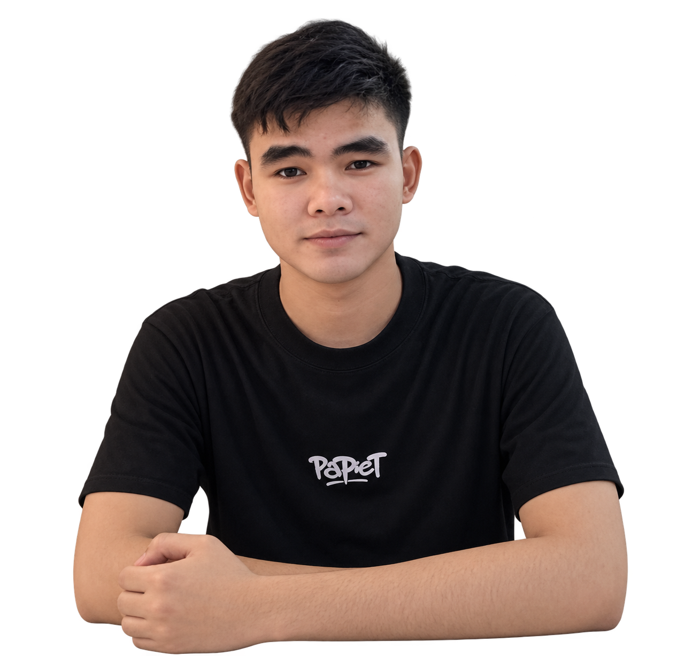

</>
Technical Skills
HTMLPage structure
LearningCSSStyling and layout
LearningJavaScriptBasic interactivity
LearningC++Programming fundamentals
LearningGit & GitHubVersion control basics
LearningBSIT STUDENT · ASPIRING WEB DEVELOPER
I’m a first-year Bachelor of Science in Information Technology student who enjoys learning about technology and building useful digital experiences.

GET TO KNOW ME
01 / ABOUT ME
I’m Jhon Mark C. Seno, an aspiring IT professional who is motivated to learn, improve my skills, and gain experience.
As a BSIT student, I am building my foundation in computing, web development, and problem-solving. I believe that learning takes patience and practice, so I try to approach every task with an open mind and a willingness to improve.
My goal is to keep developing my technical and communication skills while creating projects that are useful, clear, and user-friendly.
02 / WHAT I’M LEARNING
These are the tools and personal strengths I am developing through school activities and practice.
I’m continuously improving these skills through classroom activities, group work, and practical experience.
03 / SELECTED WORK
A few academic and personal practice projects. Replace the sample repository links with your actual GitHub URLs before publishing.
A responsive website that introduces me, presents my developing skills, and highlights my school projects.
Project details ↗A practice form demonstrating required fields and browser validation with clear feedback for invalid entries.
Project details ↗An academic flowchart project that organizes attendance-related steps using process blocks and connecting arrows.
Project details ↗04 / MY BACKGROUND
College · Philippines
Studying computing concepts, programming, and web technologies.
Sindangan National Agricultural Integrated School · Sindangan, Zamboanga del Norte
Siayan National High School · Siayan, Zamboanga del Norte
Paranglumba Elementary Integrated School · Siayan, Zamboanga del Norte
WORK EXPERIENCE
05 / GET IN TOUCH
I’m open to learning, collaboration, and opportunities to gain experience. Feel free to reach out.